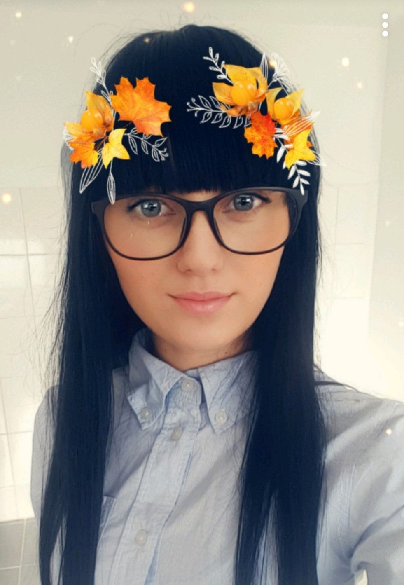

Hello!
 My name is Stefania, I'm 21 years old and I'm from Romania.
I moved to Denmark when I was accepted to study Multimedia Design at KEA.
I wanted to make a big change in my life which was the reason I applyed for hier education in another contry.
Now I'm in my first semester in international class at KEA studying Multimedia Design and Communication .
In my spare time I like to catch the beauty of the nature into pictures; to trevel and learn about different cultures and habits.
I'm a friendly and open-minded person.
My passion is to challenge myself and come out with the best.
When it comes to Multimedia Design I like both coding and design.